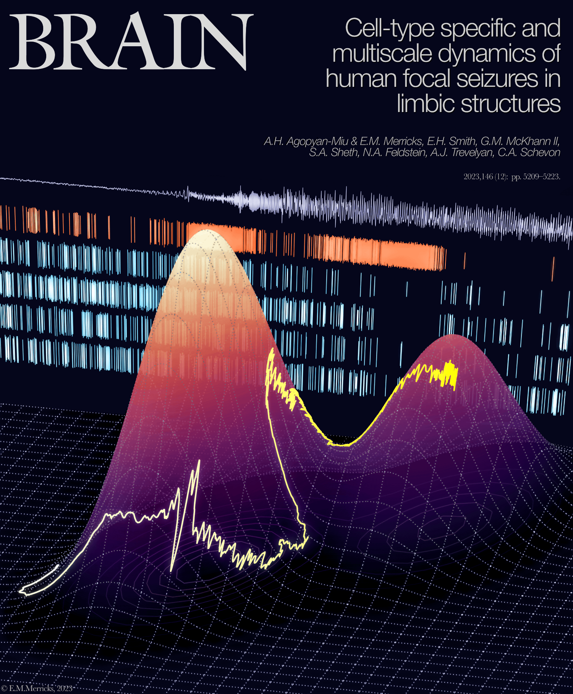
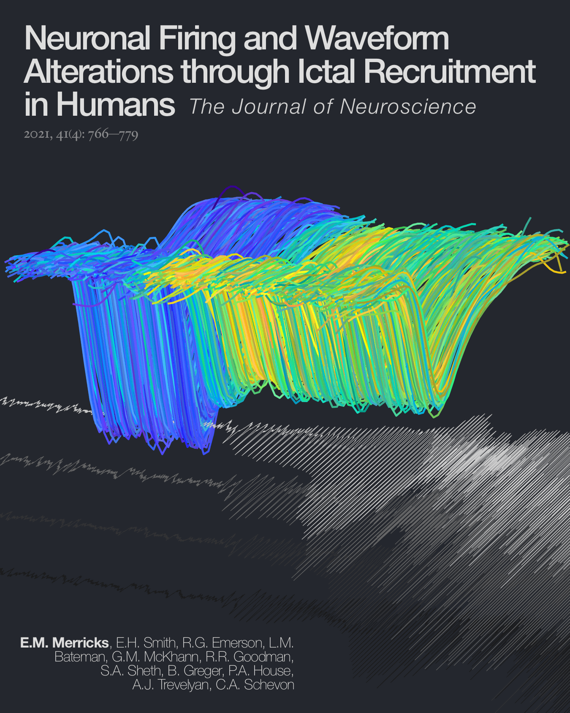
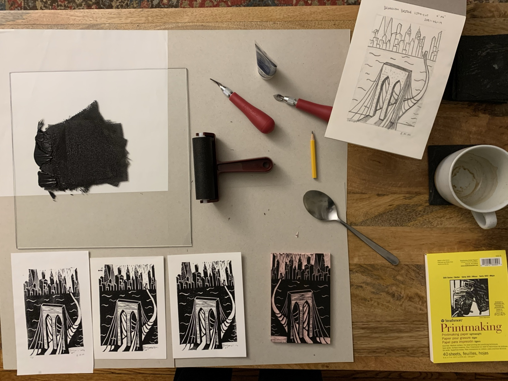
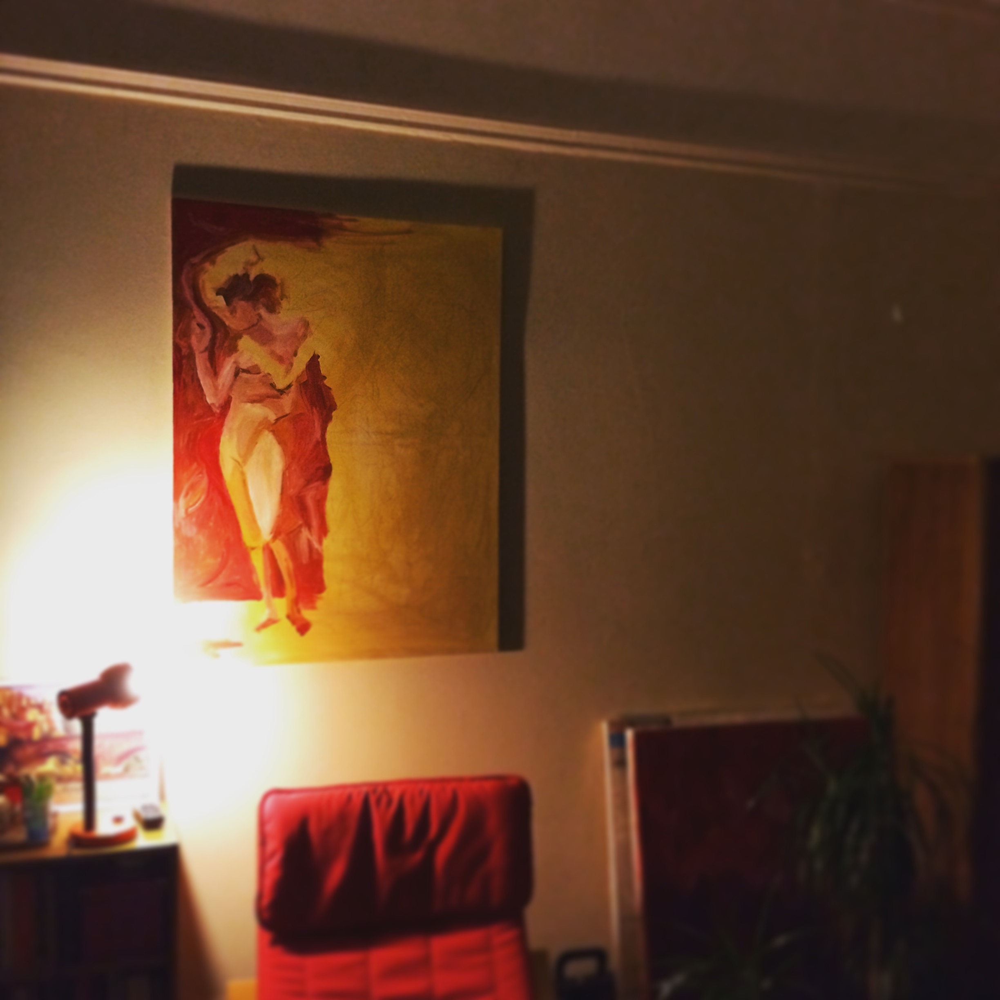
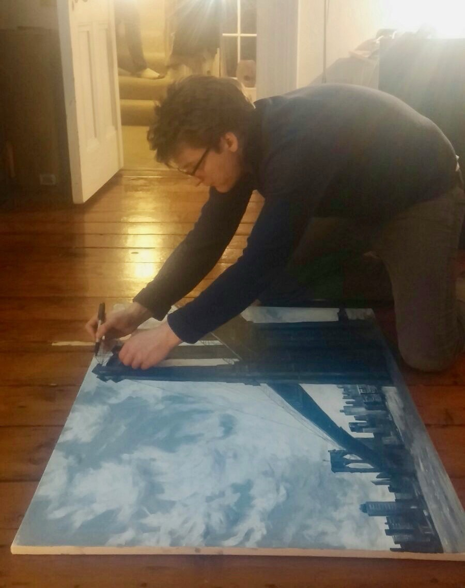
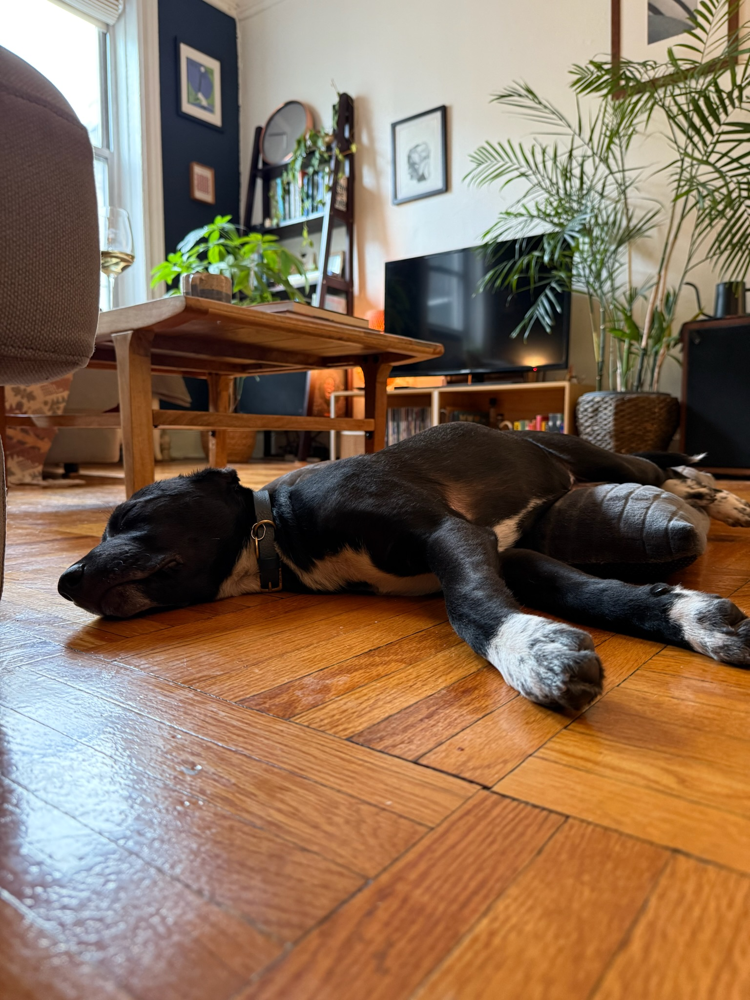

Edward M Merricks
PhD
PhD
About me
Ed is a research scientist in the Dept. of Neurology at Columbia University.
He's originally from the UK, but is now a permanent resident in the US, having lived in NYC for close to a decade.
He specializes in combining his doctoral training in Systems Neuroscience with undergraduate training in Machine Learning to uncover complex relationships in high-dimensional data. At present, this is primarily data from individual neurons recorded in epilepsy patients undergoing surgery to remove pathological tissue.
Outside being a nerd who enjoys coding for fun (see the pseudo-terminal version of this site!), he also:
He's originally from the UK, but is now a permanent resident in the US, having lived in NYC for close to a decade.
He specializes in combining his doctoral training in Systems Neuroscience with undergraduate training in Machine Learning to uncover complex relationships in high-dimensional data. At present, this is primarily data from individual neurons recorded in epilepsy patients undergoing surgery to remove pathological tissue.
Outside being a nerd who enjoys coding for fun (see the pseudo-terminal version of this site!), he also:
Science!
My research focuses on the activity of populations of single neurons in epilepsy patients,
especially how the firing patterns of individual cells play a role in seizure onset and propagation,
and how we might restrain seizures from spreading through cortex.
To do this, I maintain continuous microelectrode recordings in patients on the Epilepsy
Monitoring Unit at Columbia's affiliated hospital (NewYork-Presbyterian), tracking individual neurons
over days to weeks in order to interrogate the neuronal firing underlying pathological activity.
Beyond my primary research, I also relish the opportunity to collaborate with various lab groups across a range of important neurological questions: from cell-type specific activity at the boundary of brain tumors, to auditory processing of music, to mechanisms underlying loss of consciousness. Outside these studies, I also enjoy the opportunity to read other cutting edge research while providing academic service, averaging 25–30 peer reviews per year as of April 2025.
For more details on all of these projects, see below for the peer-reviewed publications, book chapters and pre-prints, or check out my GitHub, Google Scholar profile, ResearchGate profile, or my full academic CV.
Beyond my primary research, I also relish the opportunity to collaborate with various lab groups across a range of important neurological questions: from cell-type specific activity at the boundary of brain tumors, to auditory processing of music, to mechanisms underlying loss of consciousness. Outside these studies, I also enjoy the opportunity to read other cutting edge research while providing academic service, averaging 25–30 peer reviews per year as of April 2025.
For more details on all of these projects, see below for the peer-reviewed publications, book chapters and pre-prints, or check out my GitHub, Google Scholar profile, ResearchGate profile, or my full academic CV.


Depending on time available, I also enjoy making "cover art" for some of our publications, made entirely in MATLAB using camera manipulations on real data (though with some panels and text assembled in "post" using Pixelmator). Above are a couple of examples from recent(-ish) first-author papers...
Depending on time available, I also enjoy making "cover art" for some of our publications, made entirely in MATLAB using camera manipulations on real data (though with some panels and text assembled in "post" using Pixelmator). Above are a couple of examples from recent(-ish) first-author papers...
Similar camera manipulations can be used to produce videos entirely from code. For example, if you've ever wanted to "fly" through the action potentials of a neuron that is being recruited to a seizure to get a sense of scale
(and who hasn't? Each action potential here is over in under 2 milliseconds and is less than half a millivolt in amplitude), here you go:
Or perhaps get a feel for when a full population of neurons are firing action potentials during a spontaneous human seizure:
(Here, each dot is a single action potential, with inhibitory activity in red and excitatory in white. For a proper breakdown of this activity see our pre-print below!)

Or maybe finding zen through focusing on how the relationship between frequency bands in the brain evolves over time is more your thing.
Or perhaps get a feel for when a full population of neurons are firing action potentials during a spontaneous human seizure:
(Here, each dot is a single action potential, with inhibitory activity in red and excitatory in white. For a proper breakdown of this activity see our pre-print below!)
Or maybe finding zen through focusing on how the relationship between frequency bands in the brain evolves over time is more your thing.
Publications: 803 total citations, h-index = 12
Book chapters:
Pre-prints:
(Submitted)
(Submitted)
Peer-reviewed publications:
* co-first authors
* co-first authors
* co-first authors
Art
Linocuts (a selection)
Linocut, 2021
5" x 7"
Linocut, 2021
5" x 7"
Linocut, 2021
7" x 5"
In production:

(Speed) linocut, 2025
7" x 5"
Paintings (a selection)
Acrylic on canvas, 2015
40" x 30"
In progress:

Acrylic on canvas, 2016
30" x 20"
Co-painted with Will!
Acrylic on canvas, 2024
20" x 16"
Acrylic on canvas, 2022
~18" x 14" detail from larger work
Graphite on paper, 2022
11.5" x 8.5"
Acrylic on canvas, 2016
36" x 48"
Co-painted with Will!
In progress:

Acrylic on canvas, 2015
~14" x 12" detail from larger work
Charcoals and graphite on canvas, 2017
40" x 30"
Expanded from a smaller (11.7" x 8.3") drawing by Corné Akkers
Cheers all.

© E. M. Merricks, Ph.D., 2025